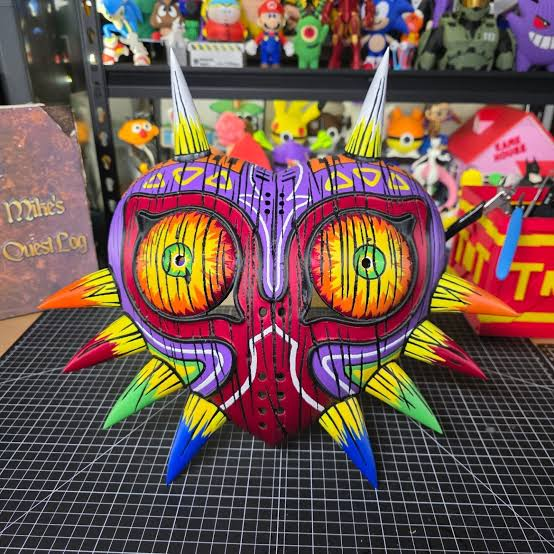
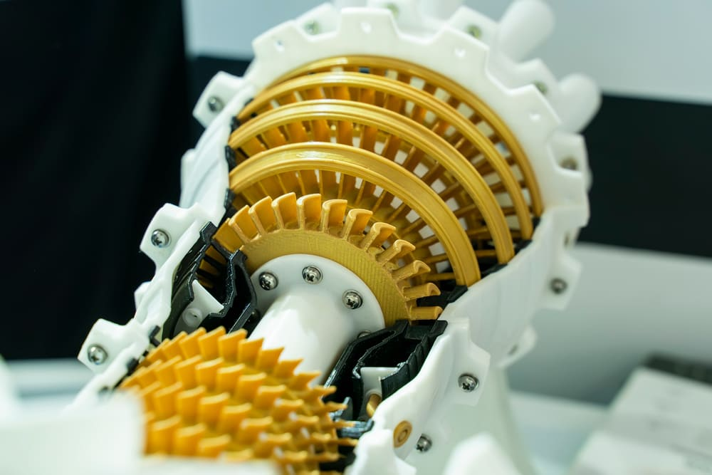
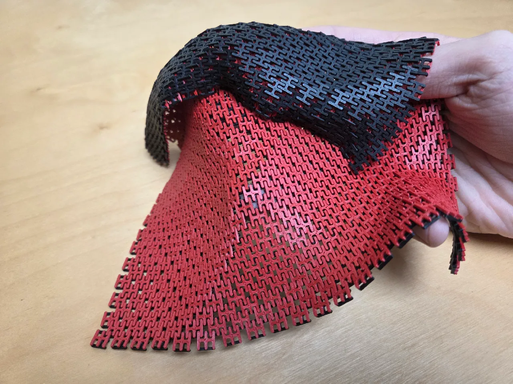
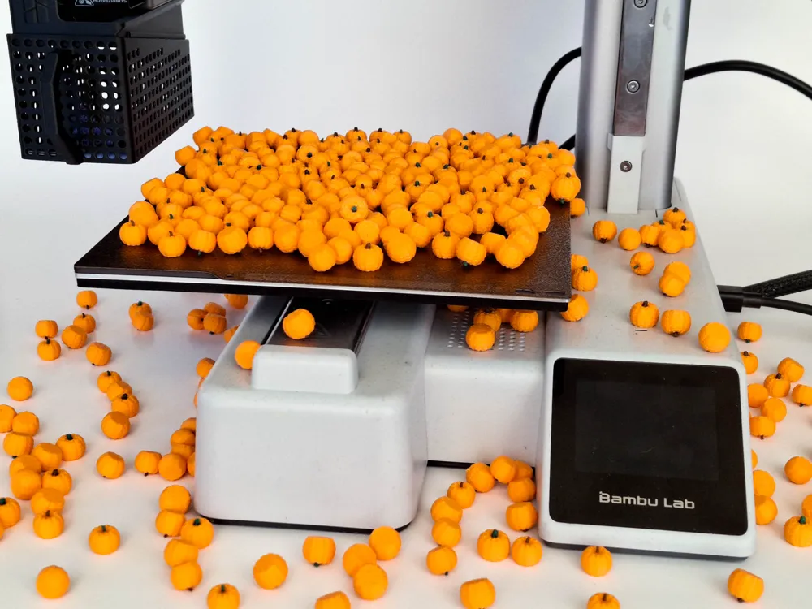
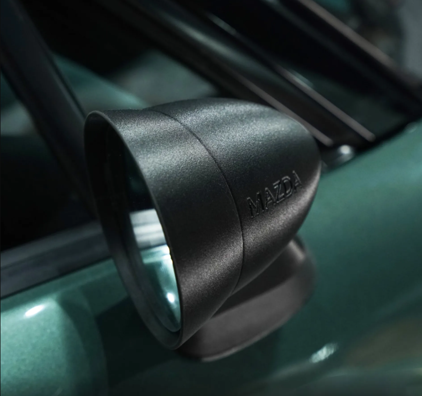

3D Printing
An additive manufacturing process that builds custom physical objects layer by layer directly from digital models.
3D printing, or additive manufacturing, has fundamentally revolutionized the way custom parts, prototypes, and functional tools are brought to life by transforming digital designs into physical objects layer by layer. Unlike traditional subtractive manufacturing methods, like CNC milling or turning, which carve a final product out of a solid block of material and create substantial waste, 3D printing builds objects purely from the ground up by depositing exact amounts of material exactly where it is needed. This layer-by-layer approach utilizes a wide variety of advanced thermoplastics, resins, and composite filaments like PETG, ABS, and carbon-fiber blends, allowing creators to tailor their material selection based on specific mechanical requirements, thermal tolerances, and structural demands.
Beyond prototyping, this technology has matured into a robust manufacturing solution for small businesses, engineering teams, and hobbyists alike, making rapid iteration and localized production faster and more accessible than ever before. From intricate mechanical assemblies and custom automotive accessories to complex architectural models and replacement household components, designers can use parametric CAD software to optimize geometries that would be impossible or cost-prohibitive to produce using injection molding. By enabling creators to manufacture custom parts on demand right from their own desktop fleet, 3D printing drastically reduces lead times and supply chain friction, empowering innovators to test, refine, and deploy physical solutions with unprecedented speed.
Our Production Fleet
We utilize a high-speed desktop printer fleet to handle multi-color prints, engineering-grade materials, and rapid prototyping.
| Printer Model | Capabilities | Build Volume | Primary Use |
|---|---|---|---|
| Bambu Lab P2S + AMS 2 Pro | Multi-color CoreXY Enclosed Printer | 256mm x 256mm x 256mm | Complex multi-color models and engineering filaments |
| Bambu Lab A1 + AMS Lite | High-speed Bed Slinger | 256mm x 256mm x 256mm | Rapid prototyping and production runs |
| Bambu Lab A1 Mini + AMS Lite | High-speed Bed Slinger | 180mm x 180mm x 180mm | Rapid prototyping and production runs on smaller models |
| Prusa Mini+ | Reliable open-source frame | 180mm x 180mm x 180mm | Dedicated functional testing and standard parts |
| Ender 3 | Budget open-frame bedslinger | 220mm x 220mm x 250mm | Basic PLA prints and entry-level functional prototyping |
| Creality CR-10S | Large-format open-frame bedslinger | 300mm x 300mm x 400mm | Large-scale single-piece prototypes and oversized models |
Our Materials and Filament Guide
Selecting the ideal polymer is critical for balancing mechanical strength, temperature resistance, and visual quality. Our fleet handles everything from rapid aesthetic prototypes to high performance structural components.
1. Standard and Aesthetic Polymers
- PLA / PLA+ (Polylactic Acid): The go-to filament for high detail models, decorative prints, and fast prototypes. Offers high tensile strength, negligible warping, and crisp surface details.
- PETG (Polyethylene Terephthalate Glycol): Combines the ease of PLA printing with superior impact strength, flexibility, and weather resistance. Ideal for functional outdoor parts, snap-fit enclosures, and brackets.
- TPU (Thermoplastic Polyurethane - 85A to 95A): Flexible, rubber like elastomer featuring incredible impact absorption, abrasion resistance, and layer bonding. Essential for custom gaskets, soft seals, dampeners, and protective covers.
- Silk and Multi-Color Co-Extrusions: Specialty PLA blends engineered for vibrant aesthetic models, display pieces, and multi-color gradient prints with a glossy metallic sheen.
2. High-Performance and Engineering Resins
- ABS / ASA (Acrylonitrile Styrene Acrylate): High temperature, UV-resistant thermoplastic suited for automotive components, outdoor fixtures, and parts requiring high heat deflection and post processing sanding.
- PAHT-CF / Carbon Fiber Composites: High temperature carbon fiber reinforced nylon engineered for continuous industrial duty, extreme rigid strength, and thermal stability in demanding mechanical applications.
- PPA / PPS / Polycarbonate (PC): Ultra-tough high-temperature engineering polymers with exceptional chemical resistance, flame retardancy, and extreme structural rigidity for specialized tooling and harsh environment parts.
3. Technical Slicing and Print Parameters
- Layer Height / Resolution: Standard print runs range from 0.08mm extra fine layer height for smooth curvature up to 0.28mm draft heights for rapid mechanical iteration.
- Infill Density / Pattern Geometry: Optimized per project using Gyroid or 3D Honeycomb patterns at 15-30% for light structural parts, up to 100% solid walls for load bearing brackets.
- Multi-Material / Soluble Support Integration: Utilizing dedicated multicolor/multi-material systems to print complex internal overhangs and multi-color branding natively.
Print Gallery
A small sample of the possibilities of what our shop can do!

High-Precision Multi-Color Model

Functional High-Strength Component

Print-in-Place Interlocking Mesh

Custom Electronics Housing

Miniature Seasonal Decor

Custom Automotive Housing
Frequently Asked Questions
Quick answers to common questions before starting your 3D printing project.
What file formats do you accept for 3D printing?
We accept STL, OBJ, STEP, and 3MF files. STEP files are preferred for functional and mechanical components as they preserve smooth CAD geometry.
What is your standard turnaround time?
Most standard prototyping and small production jobs are completed within 24 to 48 hours. Larger production runs or specialized engineering materials may take slightly longer.
How do I know which plastic material to choose?
PLA is ideal for visual prototypes and detailed decorative models. PETG or ABS work best for durable functional parts, while materials like PAHT-CF or PC are recommended for high-temperature and high-stress applications.
Can you assist with design adjustments if my file isn't ready to print?
Yes! We offer 3D modeling and CAD optimization services in Autodesk Fusion 360 to ensure your parts are designed specifically for additive manufacturing.
Do you offer multi-color or multi-material printing?
Yes, our Bambu Lab machines equipped with AMS systems can print multi-color designs, graphics, and embedded logos in a single seamless print job.